Developer Collaboration Module Quickstart
Contributed by
Masoud Kalali,
maintained and updated by
Ruth Kusterer
Collaboration Features in Brief
- Chat in private or in public.
- Share plain text, formatted code, and even complete Java projects.
- Join via any XMPP/Jabber server
such as share.java.net.
- Maintain friends and conversations lists.
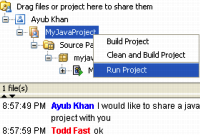
Talk code with other developers live over the network,
be it in your local team or on another continent!
NetBeans Developer Collaboration
lets you chat and share code while keeping syntax coloring,
project file structure and formatting intact.
Collaboration enables you to review, edit and build shared sources
in real time together with remote developers.
Note: Service for the public developer collaboration XMPP server share.java.net has been discontinued as of April 20, 2009. Please use another public XMMP server, or set up a private one.
This quickstart tutorial covers how to
- Install the Collaboration Module
- Register to a Collaboration Server
- Connect to a Collaboration Server
- Find People and Conversations
- Start or Join a Conversation
- Log Out and Log Back In
- Optional: Set Up Your Own Collaboration Server
This tutorial takes about 20 minutes to complete.
Install the Collaboration Module
For NetBeans IDE 6.0 or better
- Open Netbeans IDE 6.0 or better and connect to the internet.
- To download and install the Collaboration module for NetBeans,
choose Tools > Plugins from the menu. The
Plugin Manager window opens.
- Click the Available Plugins tab. The list of available plugins and packs will come up.
Select the item Developer Collaboration from the list and check the box.
- Click the Install button to install the plugin into the IDE.
The Installer window lists all plugins scheduled for installation. Click Next.
- The Plugin Manager will ask you to accept necessary licenses.
Read them and check I Agree. Click Install.
For NetBeans IDE 4.1, 5.0, and 5.5
- Open Netbeans IDE and connect to the internet.
- To download and install the Collaboration module,
choose Tools > Update Center from the menu.
The Update Center window opens.
- In the Update Center, make sure the box next to NetBeans Update Center is checked,
and click the Next button to access the Update Center.
- After a few moments, the list of available modules will come up.
Select the item Developer Collaboration from the list
and click the Add button to add all the necessary components.
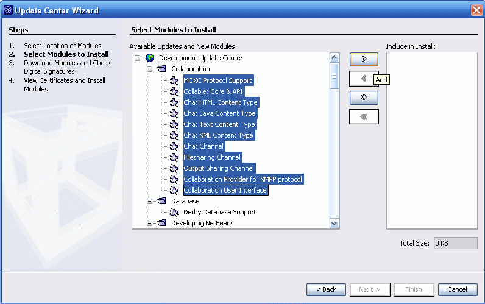
Install Collaboration using the Update Center in NetBeans IDE 5.0 (Click to enlarge)
- Press the Next button. The Update Wizard will ask
you to accept the necessary licenses. Read them and click Agree to
start downloading the Collaboration Module.
- After the download is done, press the Next button.
The Update Wizard shows you an overview of the new module to be installed.
Press the Finish button to complete the installation.
- If the Update Wizard asks you to restart the IDE,
click Restart the IDE to load the new module.
From version 5.0 beta 2 on restarting is no longer necessary.
The Collaboration Menu and Toolbar
After the module has finished loading, you will be able to see the
Collaboration toolbar and the Collaboration menu in your IDE. Congratulations!
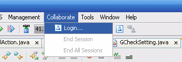
Successful installation: The Collaboration Toolbar and menu are now visible
Register to a Collaboration Server
You need a Collaboration account before you can use the Collaboration feature.
If you do not have a Collaboration account yet,
follow these instructions to create one. It's free!
- To create a new Collaboration account,
choose Collaboration > Login from the IDE's menu.
A new docked window will open on the right hand side of the IDE:
The Collaboration window.
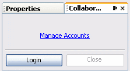
The Collaboration Window
- In the Collaboration window, click Manage accounts.
If this is your first account, a Registration Wizard window opens.
- Check the box next to "I want to register for
a new Collaboration account on share.java.net";
check the box to Accept the license and press the Next button.
(If you already have an account, check I have an existing account
instead and press Next.
Alternatively, you could also choose to create an account
on a different Collaboration server that you know.)
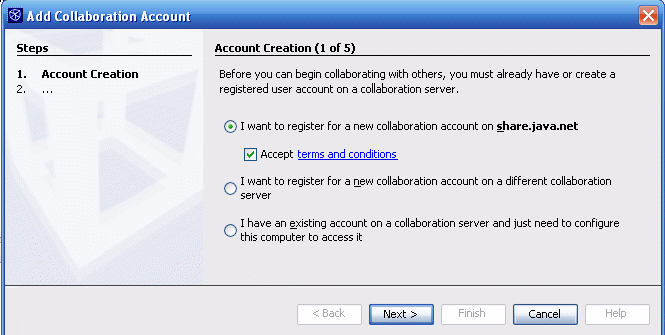
The Registration Wizard
- If your need a proxy to access the internet,
enter your proxy settings now and press Next.
-
Enter a display name that will identify you on the Collaboration server
and press the Next button.
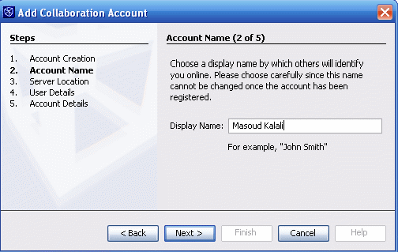
Enter display name
- On the next page, enter your real name and email address.
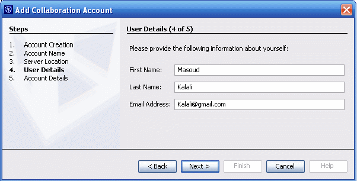
Enter real name and email
- On the next page, provide a user name for your account
-- this is the name that
other users can search for on the Collaboration server to identify you.
Enter the password you want to use twice, and
then click Finish to complete the registration.
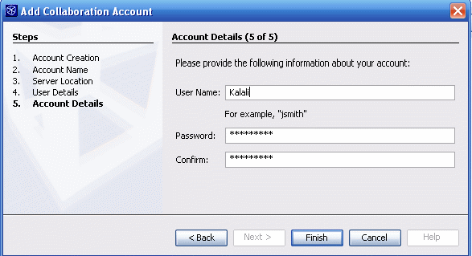
Enter user name
If you'd like to add more than one account, repeat these steps.
Note that when you click Manage accounts for the second time,
you will get an Account Management Window instead of the Wizard.
Click the Add button to access the Wizard and proceed
as described for the first account.
Connect to a Collaboration server
Your Collaboration account is now created.
The Collaboration window now displays a Login panel:
Enter your password and press the Login button to start using Collaboration.
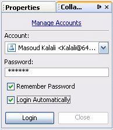
Log in to share.java.net
After you have logged in, the Collaboration window will show your Display name
and your friends and conversations list.
If this is your first time you log on, the lists will be empty.
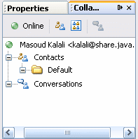
Collaboration window with friends and conversations list
In the upper part of the Collaboration window
you see a toolbar with four buttons:
The first button is the Change Status popup menu.
Use it to switch to one of the following status options:
online (green), busy (orange),
away (red) or invisible (gray).
Switch your status to online.
Next we will show you how to contact other users.
Find people and conversations
Look again at the toolbar in the upper part of the Collaboration window.
The second button is the Add Contacts button.
It lets you search and invite users to your friends list.
- To add a user, click the Add Contacts button.
Enter a user name or a real name into the search field,
then click Find to search for an existing user.
- Wait for the search result to show up and then
select a name from the "Select Users" window.
Click OK to add this user to your friends list.
- Users can reject or accept invitations.
If they accept, you will from now on be notified
each time the selected users come online.
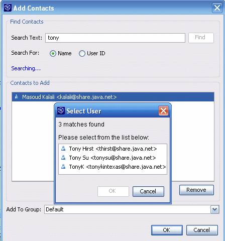
Search for friends with the Add Contacts window
The third toolbar button is the Subscribe to Public Conversation button.
It lets you search and join conversations.
There are a couple of public conversation on share.java.net
that you can join freely,
for instance netbeans and netbeans-platform.
- To find a conversation, click the Subscribe to Public Conversation
button and enter a search keyword, then click Find to start the search.
- Wait for the search result to show up and
select a conversation form the Select Conversation window.
- Click OK to add the conversation to your Conversation list.

Search for conversations.
Start or join a conversation
Conversations can be public or private.
There are four ways to start a conversation:
- The IDE will notify you as soon as a user on your friends comes online
and available users will be marked with green dots.
Double-click any user you want to chat with,
and a new Conversation window will open in the IDE,
inviting the other party to talk to you.
The new conversation will appear in your Conversations list.
-
To join an existing conversation,
similarly double-click its node in the conversation list,
and a conversation window will open in the IDE.
- Take another look at the Collaboration Toolbar:
The fourth button is the Start Conversation button.
It lets you initiate a private
conversation and then invite people to it.
To start a private conversation, select your display name
and then click the Start Conversation button.
(Note that the Start Conversation button is disabled
as long as any of the items
in your friends or conversations list is selected.)
- Alternatively, you can create
public conversations by right-clicking the Conversations node
and choosing Create Public Conversation from the context menu.
Public conversations are visible to all users
and everybody can join them.
You can grant either read or read/write access to users
who join your conversation.
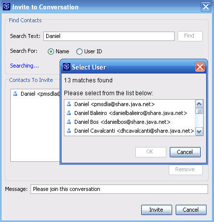
Invite other users
Anytime after a new conversation window opens in the IDE,
you may inspect the list of participants
on the left side of the Collaboration window.
Click the Invite button
at the bottom left to prompt other users to join your conversation.
You can tell whether a user is already
on your friends list by a green dot next to his name.
To share Java projects, drag and drop them with the mouse from the IDE's Projects
window to the shared area labeled Drag files and projects here to share them.
They are now fully visible and editable for your partners.

Discuss your Java code in a Collaboration conversation
To quit a conversation, right-click the conversation and choose Leave
from the context menu, or click the closebox next to the conversation's title.
To log out from Collaboration, choose Collaborate > End All Sessions
from the main menu.
To log back in, choose Collaborate > Login;
enter your account information, and click the Login button
to open the Collaboration window again.
If your firewall configuration does not allow you to use
a public external collaboration server like share.java.net,
e.g. because your company requires source code to remain protected,
you can set up your own internal server.
On an internal host, install a collaboration server
that supports the XMPP (Jabber) protocol, for instance the free
OpenFire server.
(Tip: After installation, you will find the OperFire admin console by pointing your browser
to http://localhost:9090). Follow the previous instruction in this tutorial and
log in with your username to your custom hostname instead of share.java.net.
Next Steps
{kind=link}